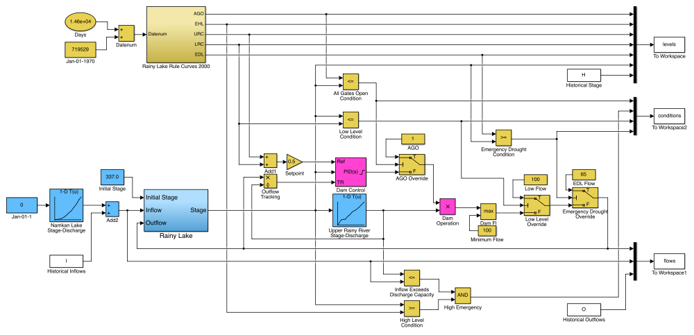
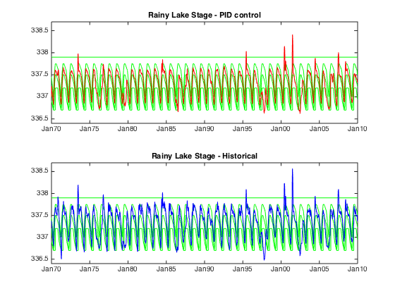

Rainy Lake Simulation Model
Use this script to load the simulation data for the Simulink model Rainy_Lake_Simulation_Model.slx and display the results. The script loads historical inflow, outflow, and height data from RLEstimates.csv located in an accompanying data directory.
Contents
Load Data
if exist('RLEstimates.mat') load 'RLEstimates.mat'; else RLTable = readtable('./data/RLEstimates.csv'); save './data/RLEstimates.mat' RLTable end dates = datenum(RLTable{:,1}); H = RLTable{:,2}; I = RLTable{:,3}; O = RLTable{:,4}; I = [(1:length(I))',I]; H = [(1:length(H))',H]; O = [(1:length(O))',O];
Run Simulation
Rainy_Lake_Simulation_Model; set_param('Rainy_Lake_Simulation_Model','IgnoredZcDiagnostic','none'); sim('Rainy_Lake_Simulation_Model');
Plot Results
t = levels.Time + datenum('Jan-01-1970'); ago = levels.Data(:,1); ehl = levels.Data(:,2); urc = levels.Data(:,3); lrc = levels.Data(:,4); edl = levels.Data(:,5); rlest = levels.Data(:,6); rlhist = levels.Data(:,7); figure(1) subplot(2,1,1); plot(t,urc,'g', ... t,lrc,'g', ... t,ago,'g', ... t,ehl,'g', ... t,edl,'g'); hold on; plot(t,rlest,'r'); hold off; datetick('x',12) ylim([336.4,338.7]) title('Rainy Lake Stage - PID control'); subplot(2,1,2); plot(t,urc,'g',t,lrc,'g',t,ago,'g',t,edl,'g'); hold on; plot(t,rlhist','b'); hold off; datetick('x',12) ylim([336.4,338.7]) title('Rainy Lake Stage - Historical'); print -dpng -r300 images/Rainy_Lake_Simulation_Results
figure(2) scatter(rlest,rlhist) hold on plot([336.4 338.8],[336.4 338.8]) hold off